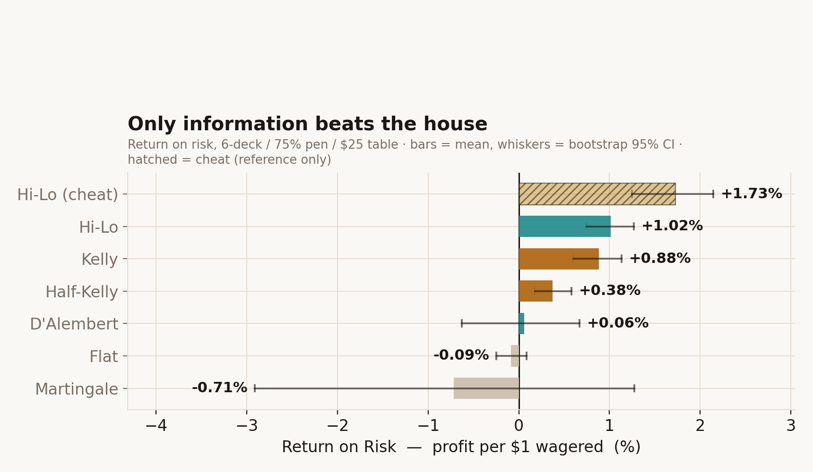

Every blackjack "system" comes with a story about the night it broke the bank, and a quieter, much larger graveyard of nights it didn't. I built a simulator that plays each system through hundreds of thousands of hands and asks the only questions that matter: how often do you finish ahead, how often do you walk out broke, and how much money did you push across the felt to get there?
Overview
The headline is uncomfortable: bet-sizing systems mostly rearrange losing. They make the ride smoother, spikier, longer or more theatrical — they do not erase a negative edge. The one genuine exception is counting, and it wins for a reason that has nothing to do with bet patterns: it adds information.

It's "what kind of loss does this system manufacture, and how much bankroll does it need before that loss becomes visible?" That single reframing makes martingale, flat betting, counting and team play comparable — without pretending they're solving the same problem.
−0.09% per dollar wagered — within noise of the textbook house edge. Boring, which is exactly what makes it the honest control group.
It wins small constantly and then loses everything: ~100% of sessions ruined, median outcome −$1,925. The doubling collides with the table max.
For the MIT team, a 40× larger roll cuts ruin from 82% to 0% while the per-dollar edge holds dead flat at ~1.1%. Capital buys survival.
Hi-Lo measures +1.0% ROR — the only heuristic that clears zero with its whole confidence interval. But it's earned through volatility, not magic.
How to read the numbers
When outcomes are heavy-tailed, the mean is a fiction nobody lives. The median is what actually happens to the person at the table.
Did the bankroll survive long enough for the strategy's story to play out? A system can have a positive edge and still go broke first.
Return on risk divides profit by total dollars wagered, so a system can't look good merely by shoving more money across the table.
The deep dive splits into two halves: how the engine works and where it's honest about its limits, and the full sweep analysis — decks, penetration, bankroll and bet limits, each one moved across its whole range while everything else is held fixed.
The project is really about variance: how it disguises losing maths, and how fast a seductive story falls apart the moment you plot the whole distribution instead of the one run that got told at the bar.